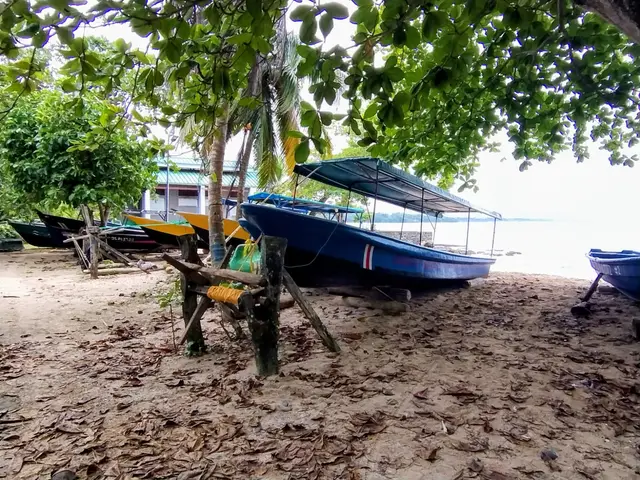
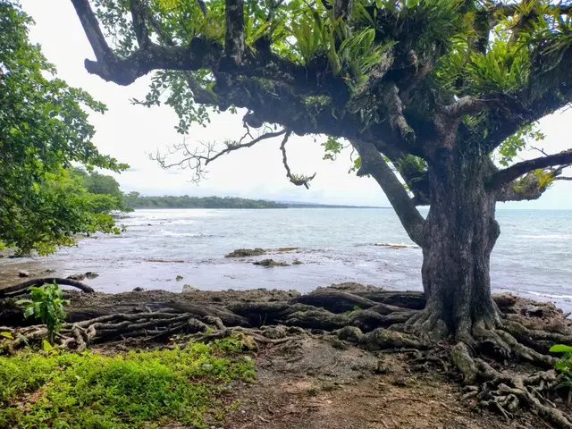

4
4
Cultura vivaCahuita
Muelle de Cahuita
Punto principal para tours, snorkel y conexión comunitaria.
- Todos los días, 8:00 a.m. – 4:00 p.m., con registro previo
- Libre, con cuota voluntaria
Un tributo a quienes llegaron esperando volver a sus tierras natales.
Su nombre surge en memoria de las personas africanas esclavizadas y los trabajadores caribeños que arribaron a estas costas con la esperanza de volver a sus tierras natales y nunca pudieron hacerlo.
Rinde tributo a sus raíces ancestrales y sirve de contraparte simbólica a la histórica "Puerta de No Retorno" de los puertos de embarque africanos.
Una placa en el sitio recuerda a las personas africanas que ingresaron a Cahuita producto del naufragio de los barcos esclavistas daneses el 2 de marzo de 1710, y declara el lugar un sitio de memoria histórica y camino de reunificación y redención.
Otra placa señala que en este lugar se construye el Parque y Monumento "Puerta de la Reunificación entre África y el Pueblo Afrodescendiente", con fecha del 24 de enero de 2026, Día de la Cultura Africana y Afrodescendiente.
4
Punto principal para tours, snorkel y conexión comunitaria.

15Antiguo punto de entrada de mercancías y lugar de los primeros bautizos en el mar.

16El antiguo muelle donde los pescadores guardaban sus botes, junto a la costa de la memoria.